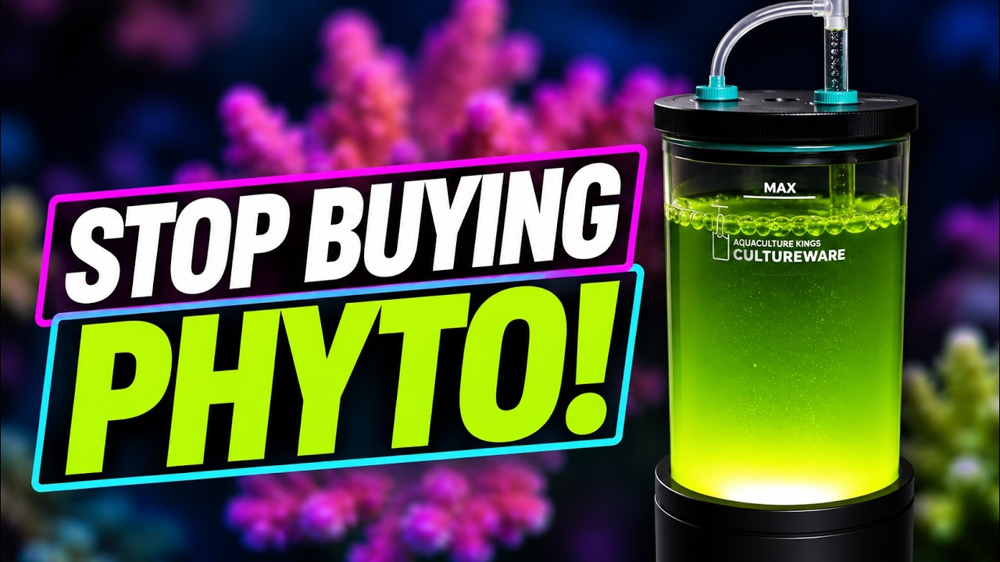

Friday, November 13, 2026 · 31 items · back issues
Howdy, it's Isaac again.
Happy Friday, reefing family, and welcome back to my Weekly Dive.
A lot landed this week.
Here are the biggest things worth knowing:
- Vertical Characteristics of Marine Heatwaves in Global Coral Reef Regions
- Steps Toward Vitrification and Banking of Coral Larvae Using Field‐Friendly Cryomesh Technology
- Reproductive-state and life-stage variation in oxyregulation of reef-building corals
- Occurrence of five non-native and invasive taxa on natural and artificial reefs within the Florida Keys National Marine Sanctuary
- Plus 27 more across wild reefs, livestock & corals, husbandry & science
Let's dive into the news touching our hobby…
Community6
-
Behind the Scenes of Shedd Aquarium's Massive Renovation with Noel Heinsohn
Shedd Aquarium's renovation replaced a 53-year-old Caribbean reef exhibit with two 28,000-gallon habitats including live coral. Large-scale institutional reef husbandry and design provides valuable examples for advanced hobbyists managing complex systems.
1h 15m+1 similar Tidal Gardens · Nov 6 · youtube.com
-
Properly Acclimating New Fish Arrivals – Lance Ichinotsubo Series Part 1
Properly acclimating new fish arrivals, part one of a Lance Ichinotsubo series. Fish acclimation is fundamental husbandry practice every reef keeper must master.
Reefs.com · Afishionado · Nov 11 · reefs.com
-
CIPS 2026: What to Expect at the World’s Biggest Aquarium Trade Show
CIPS 2026 trade show runs November 12–15 in Guangzhou with aquarium industry announcements and awards. Major sourcing event for equipment and livestock.
Reefs.com · danireef · Nov 9 · reefs.com
-
A Diver’s 1,000-Gallon Reef Oasis Built on Natural Ocean Water | Rio de Janeiro, Brazil
Feature on a 1,000-gallon Brazilian reef system running exclusively on natural seawater with calcium reactor and Balling Method dosing. An interesting system build showcasing unconventional husbandry decisions and natural water chemistry management.
24 min World Wide Corals · Nov 12 · youtube.com
-
We Built a Copepod Factory at the Coral Farm
Tidal Gardens built a dedicated copepod culture station at their coral farm using two species. Copepod husbandry and culturing techniques directly apply to food production in captive reef systems.
10 min Tidal Gardens · Nov 12 · youtube.com
-
Sicce Syncra Silent 2.0 Retested After 14 Years: Real Flow, Head and Power Draw
Sicce Syncra Silent 2.0 pump retested after 14 years, measuring real flow, head, and power consumption. Actual performance data on a widely-used circulation pump is rare and directly useful for tank selection.
Product Reefs.com · danireef · Nov 11 · reefs.com
Industry & Products1
-
Kessil Releases AP9XE
Kessil releases the AP9XE reef light, raising output 10% over the AP9X while maintaining low profile and power draw. A meaningful iteration of a flagship product helps aquarists evaluate if the upgrade justifies the cost.
Product Reef Builders · Rob Mougey · Nov 12 · reefbuilders.com
Husbandry & Science7
-
Steps Toward Vitrification and Banking of Coral Larvae Using Field‐Friendly Cryomesh Technology
Study advances cryopreservation of coral larvae using cryomesh technology across multiple species. Successful coral larval banking secures genetic diversity and enables future restoration and research.
Advanced Science · E. Michael Henley et al. · Nov 10 · doi.org
-
Reproductive-state and life-stage variation in oxyregulation of reef-building corals
Research shows that oxygen regulation capacity in reef corals varies by reproductive state and life stage, with larvae especially vulnerable during ocean deoxygenation. Understanding hypoxia tolerance across coral life stages is critical as dead zones expand on warming reefs.
Marine Pollution Bulletin · Alexandra Skeer et al. · Nov 7 · doi.org
-
Microplastics in the oceans: the many ways they can harm coral life
Microplastics ingested by red coral (Corallium genus) accumulate and harm the animals. Plastic ingestion is a documented stressor affecting coral physiology and ecosystem health; a direct concern for both wild reefs and captive systems.
Climanosco Research Manuscripts · Cinzia Corinaldesi et al. · Nov 10 · doi.org
-
An autonomous imaging system for reef fish monitoring in the southern Gulf of Mexico
Autonomous cameras deployed at a Gulf of Mexico reef provided 191,000+ images for fish assemblage monitoring, replacing diver surveys. This method scales reef fish observation and could inform aquarium-holding practices for difficult species.
Frontiers in Marine Science — Journal · Nuno Simoes · Nov 12 · frontiersin.org
-
Submarine groundwater discharge and nutrient enrichment in Kingston Harbour, Jamaica: geochemical evidence and spatial and seasonal dynamics
Submarine groundwater discharge identified as a major nutrient pathway in Kingston Harbour, Jamaica, driving coastal eutrophication. Understanding nutrient pathways informs why reef systems decline and what water chemistry management requires.
Frontiers in Marine Science — Journal · Debbie-Ann D. S. Gordon-Smith · Nov 12 · frontiersin.org
-
PFAS Occurrence and Bioaccumulation in Marine Organisms and Implications for Coral Reef-Associated Food Webs and Biomonitoring
Review examines PFAS bioaccumulation in marine organisms including three studies of reef fish and corals. PFAS contamination threatens reef systems and animals kept in tanks; understanding pathways matters for water quality.
Applied and Computational Engineering · Hangchen Liu · Nov 10 · doi.org
-
📑 #NewStudy by Forsman et al. look at the role of habitat and seascape on fish communities on sea Country in…
New study examines how habitat and seascape affect fish communities on northern Australian sea country. Research on reef fish assemblies and habitat architecture is relevant, though the link is minimal.
Australian Society for Fish Biology — Bluesky · Nov 12 · bsky.app
Livestock & Corals1
-
Updated occurrence, habitat associations, and genomic resources of syngnathids in the Sembilan Archipelago, Malaysia
Survey documents seahorse and pipefish occurrence, habitat use, and genomic resources in Malaysian reefs. Syngnathids are traded marine livestock; their conservation status and ecology directly affects aquarium availability and husbandry understanding.
Frontiers in Marine Science — Journal · Peng Zhan · Nov 11 · frontiersin.org
Wild Reefs15
-
Vertical Characteristics of Marine Heatwaves in Global Coral Reef Regions
Marine heatwave subsurface characteristics across coral reef regions reveal deep events are stronger but less frequent than surface events. Vertical MHW structure changes understanding of bleaching mechanics and reef thermal stress.
Geophysical Research Letters · Yulong Yao et al. · Nov 10 · doi.org
-
Occurrence of five non-native and invasive taxa on natural and artificial reefs within the Florida Keys National Marine Sanctuary
Five non-native and invasive taxa documented on natural and artificial reefs in the Florida Keys National Marine Sanctuary. Invasion biology directly threatens reef health and management in a critical US sanctuary.
Frontiers in Marine Science — Journal · Chris Langdon · Nov 13 · frontiersin.org
-
Temporal dynamics of coral bleaching and live coral cover at the Cayman Crown Reef, Gulf of Honduras (2016–2025)
Nine-year survey tracks bleaching and coral recovery at Cayman Crown Reef in Honduras, showing resilience despite offshore depth. Documented recovery patterns inform understanding of reef trajectory under climate stress.
Frontiers in Marine Science · Ana Giró et al. · Nov 10 · doi.org
-
Rubble stabilization alone cannot overcome the deleterious effects of soft coral dominance
Research shows rubble stabilization structures alone cannot overcome soft coral dominance on damaged reefs. Reef restoration ecology directly informs conservation strategy and reef resilience science.
Restoration Ecology · Tania M. Kenyon et al. · Nov 9 · doi.org
-
🔊 Two Scripps-led studies examined how underwater sounds could help rebuild damaged coral reefs and fish…
Two Scripps studies found that playing healthy reef soundscapes attracted more fish larvae and adult settlement to damaged reefs. Acoustic cues are an emerging restoration tool for reef recovery.
Scripps Institution of Oceanography — Bluesky · Nov 7 · bsky.app
-
Impacts of the Boreal Summer Intraseasonal Oscillation on marine heatwaves in the Taiwan Strait
Boreal Summer Intraseasonal Oscillation drives marine heatwaves in the Taiwan Strait, a hotspot for intense summer MHWs. Understanding the atmospheric drivers of regional heatwaves matters for predicting bleaching pressure on wild reefs.
Frontiers in Marine Science — Journal · Ying Zhang · Nov 13 · frontiersin.org
-
A two-year fishing ban in Portugal led to the recovery of seafloor vegetation and overall habitat – one…
A two-year Portuguese fishing ban recovered seafloor seagrass habitat, with one seahorse species thriving relative to another. Fishery regulation and recovery outcomes inform understanding of wild seahorse ecology and conservation success.
Project Seahorse — Bluesky · Nov 12 · bsky.app
-
Known as seamounts, these geological structures can become biodiversity hotspots, supporting corals, sponges…
Seamounts host coral, sponge, and fish biodiversity but face industrial bottom trawling. Conservation of wild reef structure protects the genetic and ecological sources reef keeping depends on.
UBC Oceans — Bluesky · Nov 9 · bsky.app
-
eDNA metabarcoding and random forest identify super-connector fish species across mangrove–seagrass–coral reef continuums in the South China Sea
eDNA metabarcoding and machine learning mapped fish species across mangrove-seagrass-coral reef habitats in the South China Sea. Understanding connectivity and key species that move between these ecosystems informs conservation priorities and reef resilience.
Frontiers in Ecology and Evolution · Chunchun Liu et al. · Nov 9 · doi.org
-
A 1951–1998 Lutao coral Pb isotope record reveals site-specific, marine-integrated anthropogenic Pb pollution signals in the Northwest Pacific
A 48-year coral Pb isotope record from Taiwan reveals site-specific anthropogenic lead pollution patterns in the Northwest Pacific. Coral archives document marine pollution exposure that affects reef ecosystems across the region.
Frontiers in Marine Science — Journal · Chen-Feng You · Nov 13 · frontiersin.org
-
From the sky to the deep sea: ecosystem structure and ecological integrity across the National Marine Sanctuaries of Bikar and Bokak, Marshall Islands
Biodiversity survey across terrestrial-to-deep-sea gradients at remote Marshall Islands atolls characterizes ecosystem structure and condition. Understanding intact tropical reef ecology informs conservation priorities and baseline conditions for comparison.
+1 similar Frontiers in Marine Science — Journal · Enric Sala · Nov 11 · frontiersin.org
-
📑 #NewStudy by Jalali et al. consider attempts to bring back kelp forests by curbing the urchins that have…
A new study examines urchin culling as a method to restore kelp forests. Urchin population dynamics and kelp forest collapse illustrate reef ecosystem tipping points and the mechanics of regime shifts.
Australian Society for Fish Biology — Bluesky · Nov 8 · bsky.app
-
IMAS and UWA researchers leave Esperance today to re-survey reefs in the Recherche Archipelago
Researchers are re-surveying reefs in Australia's Recherche Archipelago to track changes in the Great Southern Reef. Long-term monitoring of wild reef health informs understanding of what healthy reefs maintain.
Great Southern Reef Foundation — Bluesky · Nov 9 · bsky.app
-
Behavioural Responses of Angelfish (Centropyge tibicen and C. nox) to Exogenous Food Around Peak Abundance (MaxN) Using Baited Remote Underwater Videos
Baited video footage revealed behavioral changes in two angelfish species around peak feeding. Detailed behavior data on reef fish aggregation dynamics adds to understanding of fish ecology in wild systems.
Journal of Marine Science and Engineering · Heidi Kelsall et al. · Nov 8 · doi.org
-
Assessing anthropogenic thermodynamic influences on marine heatwaves near the Korean Peninsula using a coupled regional climate model
Study models anthropogenic influences on marine heatwaves near the Korean Peninsula using regional climate simulation. Rising temperatures drive wild-reef bleaching and shape collection logistics, making this regionally relevant.
Frontiers in Marine Science — Journal · Seung-Ki Min · Nov 12 · frontiersin.org
Resource

How to Culture Phytoplankton at Home | AK Culturi-S Reef Tank ReactorVideo demonstrates phytoplankton culturing with AK Culturi-S reactor to feed copepods for mandarins. Live food culture is core husbandry for sustaining obligate microphagous fish.
5 min ReefDudes · Nov 9 · youtube.com
Get it in your inbox
One email a week, free. Every item links to its source.
Prefer a feed reader? Follow along by RSS.